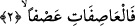
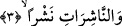

“el-Mürselât” kelimesinin başındaki “vav” harfi kasem yâni yemin anlamı ifâde eden
vavdır. Âyetin başındaki “el-Mürselât” gönderilmiş tâife, zümreler anlamınadır.
Meleklere tâife ve zümre denmesi her günün veya her yılın ya da her olayın
meleklerinin kendi aralarında bir tâife ve zümre oluşturmalarından dolayıdır.
Birinci âyette yer alan “urfen” kelimesi, “peşipeşine” anlamınadır. Burada birinci
âyette meleklerin “birbiri peşinden gönderilenler” şeklinde ifâde olunması, “teşbih-i
beliğ” kabilindendir. Buradaki teşbîhte ardarda gönderilen melekler, atın yelesindeki
kıllara benzetilmiştir. Bir başka ifâdeyle burada birbiri ardına akan meleklerin üzerine
yemin edilmektedir.
Birinci âyette yer alan “urfen” kelimesi, “birbiri ardına, peşipeşine” anlamına geldiği
gibi, -münker; yâni çirkin şey anlamının zıddı olan -, “ma’rûf ve ihsan” anlamına da
gelebilir. Kelimenin bu anlama gelmesi doğal olarak ilgisiz değildir. Çünkü melekler
eğer rahmet için gönderilmişler ise kelimenin ma’rûf ve ihsan anlamına geldiği kolayca
anlaşılır. Eğer melekler kâfirlere azâb etmek için gönderilmişlerse bu da peygamberlere
ve müminlere yapılmış olan bir ma’rûf ve ihsan demektir. Bir başka ifâdeyle;
düşmanlara verilecek azâb, dostlara yapılmış ihsan, iyilik demektir.
2. Şiddetle eserek (zararlıları) savurup atanlara;
“Asafati’r-rîhu” demek, “rüzgar şiddetle esti” demektir. Şiddetle eserek savurup
atanlara, İkinci âyetteki “asfan”, üçüncü âyetteki “neşran”, dördüncü âyetteki “farkan”
kelimeleri kendi fiillerini pekiştirmekte, anlamı güçlendirmektedirler.
“ve’l-Mürselâti urfen” âyetinden sonra “el-Âsıfât” kelimesinin başına “fâ” harfinin
getirilmesi meleklerin dünyaya inip harekete geçmelerinin, gönderilmelerinin hemen
ardından olduğuna, arada hiç zaman aralığı bulunmadığına işâret etmek içindir. “el-
Mürselât, el-Âsıfât, en-Nâşirât” sıfatlarının nitelemiş oldukları, meleklerdir.
3. (Hakîkat ve hayırları) yaydıkça yayanlara;
“en-Neşr”, yaymak anlamınadır. “el-Âsıfât” kelimesinden sonra tekrar “vav” harfine
dönülmesi sebebsiz değildir. Çünkü yayan melekler, “el-Mürselât/gönderilen”
meleklerin zümrelerinden farklı zümredendirler. Bu ilk beş âyette iki kısım melek
görüyoruz. Allah birinci grubu iki vasıfla niteliyor. Sonra bunları ikinci grub izliyor,
Allah ikinci grubu üç vasıfla niteliyor.